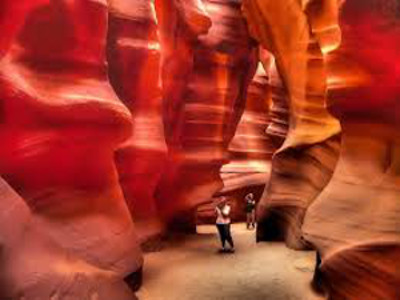

Different Places To Experience

Hidden Beach
Located on the Marieta Islands is a beach paradise hidden below a hole in the ground. Within the naturally formed shell is crystal-clear water. Although it has become a famous beach, it is really difficult to get in to. Other than being carried down in a helicopter there is only one known way: A very small opening on the tidal sides of its walls.

Sea Of Stars
The blue lights are caused by bioluminescent phytoplankton that emit light when stressed which makes the ocean look like a night sky full of stars.

Antelope Canyon, USA
It is a small but beautiful and unique land formation in northern Arizona. It is not a state park and is often unvisited by many tourists in the area. It takes about 1 to 2 hours to see the whole canyon but it's worth the time.